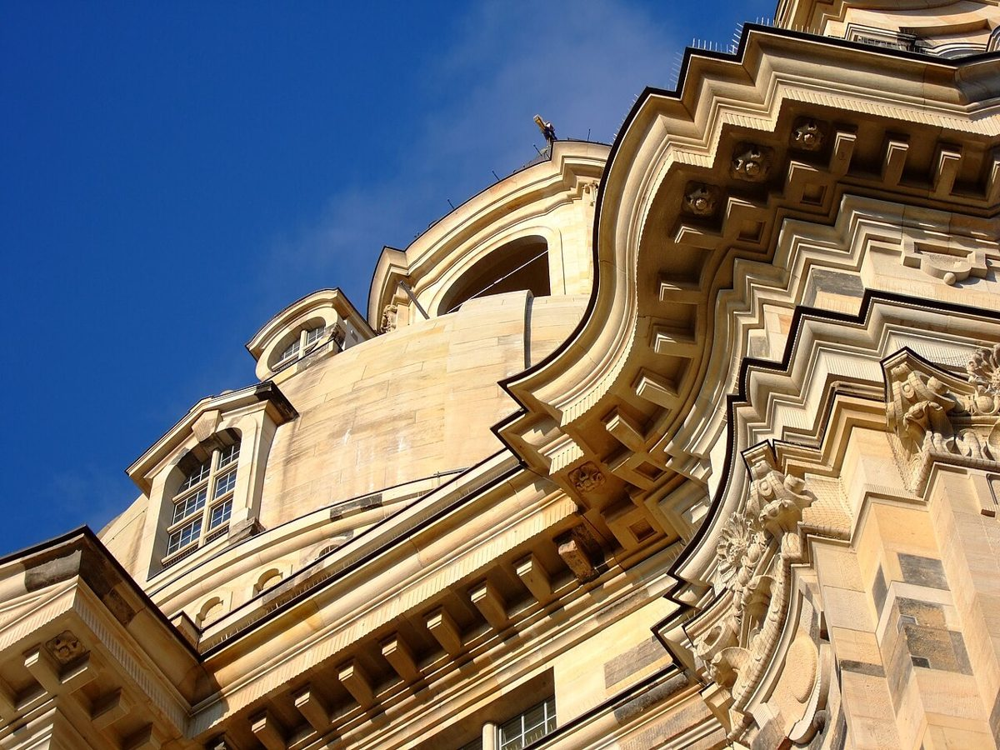

La Frauenkirche de Dresde : Un joyau architectural à découvrir

La Frauenkirche de Dresde, symbole de résilience et de renaissance, est l'un des monuments les plus emblématiques d'Allemagne. Située au cœur de la ville de Dresde, cette église baroque attire des milliers de visiteurs chaque année grâce à son histoire fascinante et à son architecture majestueuse. Que vous soyez passionné d'histoire, d'art ou simplement en quête de beauté, la Frauenkirche est une destination incontournable.
Une histoire mouvementée
Construite au XVIIIe siècle, la Frauenkirche a été presque entièrement détruite lors des bombardements alliés de la Seconde Guerre mondiale. Pendant des décennies, ses ruines sont restées un mémorial symbolique de la destruction. Ce n'est qu'après la réunification de l'Allemagne que des efforts de reconstruction ont été entrepris, utilisant autant que possible les pierres d'origine. Réouverture en 2005, elle est aujourd'hui un symbole de paix et de réconciliation.
Conseils pour votre visite
Pour profiter pleinement de votre visite, voici quelques conseils pratiques :
Accès et transport
La Frauenkirche est facilement accessible depuis le centre-ville de Dresde. Si vous venez en train, la gare centrale de Dresde est à environ 20 minutes de marche. Les tramways et bus locaux desservent également la zone, avec plusieurs arrêts à proximité. Pour ceux qui préfèrent la voiture, des parkings sont disponibles dans les environs, mais ils peuvent être saturés en période de forte affluence.
Meilleure période pour visiter
Le printemps et l'automne sont les moments idéaux pour visiter la Frauenkirche. Les températures sont agréables, et la ville est moins fréquentée qu'en été. Si vous souhaitez assister à un concert ou à un événement spécial, vérifiez le calendrier des activités sur le site officiel de l'église.
Les incontournables de la Frauenkirche
Voici quelques points forts à ne pas manquer lors de votre visite :
1. L'architecture extérieure
Admirez la façade impressionnante de l'église, avec ses pierres sombres et claires qui témoignent de son histoire tumultueuse. La coupole, haute de 91 mètres, est un chef-d'œuvre de l'architecture baroque.
2. L'intérieur et l'autel
L'intérieur de la Frauenkirche est tout aussi impressionnant, avec ses fresques, son autel magnifiquement restauré et ses vitraux lumineux. L'ambiance est à la fois solennelle et apaisante.
3. La montée à la coupole
Pour une vue panoramique sur Dresde, montez les 200 marches jusqu'à la plateforme de la coupole. L'effort en vaut la peine, surtout par beau temps.
Où manger à proximité
Après votre visite, ne manquez pas de goûter à la gastronomie locale. Plusieurs restaurants et cafés autour de la Frauenkirche proposent des spécialités saxonnes, comme le « Dresdner Eierschecke », un délicieux gâteau traditionnel. Pour un repas plus copieux, essayez les plats à base de viande, souvent accompagnés de pommes de terre et de sauces savoureuses.
Conclusion
La Frauenkirche de Dresde est bien plus qu'une simple église : c'est un témoignage vivant de l'histoire et de la capacité de l'humanité à se reconstruire. Que vous soyez là pour quelques heures ou plusieurs jours, cette visite vous laissera des souvenirs inoubliables. Alors, préparez votre voyage et découvrez ce joyau architectural au cœur de l'Allemagne.
Haiktec
- Le Guide Essentiel du Rhin, Francfort et Heidelberg : Découvertes Insolites et Itinéraires Pratiques
- Planificateur de Voyage et Suivi de Dépenses - Modèle Professionnel
- Le Guide Pratique pour Vendre sur Etsy: 7 Stratégies Simples pour Augmenter vos Ventes en 2026
Text mit KI erstellt und automatisch geprueft.